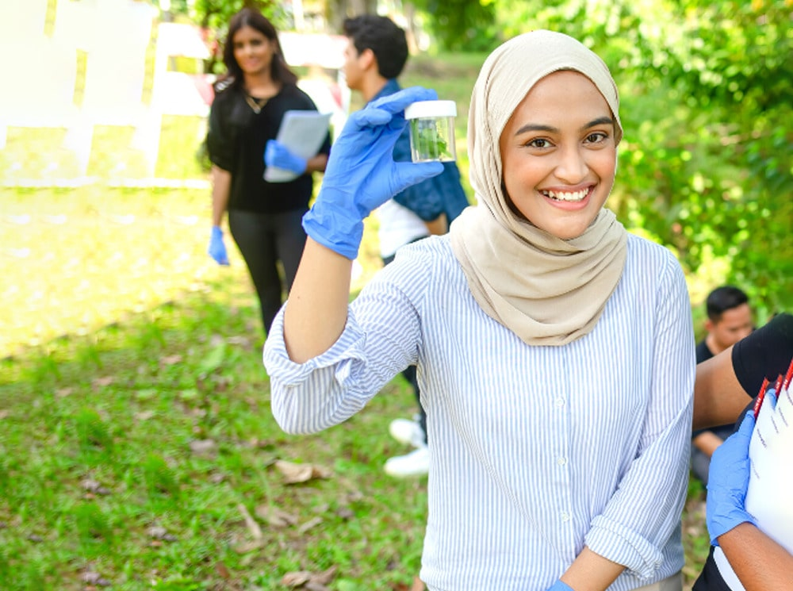
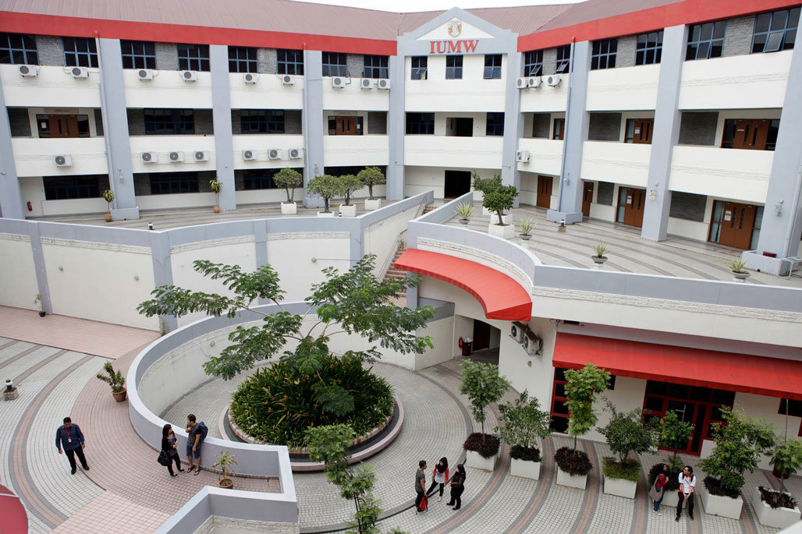

About International University of Malaya-Wales (IUMW)
International University of Malaya-Wales (IUMW) is a premier higher education institution established through an innovative joint venture between Universiti Malaya (UM)—Malaysia's top public research university—and the University of Wales Trinity Saint David (UWTSD), UK. Built upon a shared heritage of over two centuries of academic excellence, IUMW delivers world-class British and Malaysian dual-degree programs in the heart of Kuala Lumpur.
As a leader in dual-award qualifications, IUMW enables students to earn two degree certificates upon graduation—one from IUMW and one from UWTSD. Dual Award students also enjoy the exclusive opportunity to spend a study abroad semester at UWTSD's UK campus without paying extra tuition fees. With career-aligned curricula, flexible learning options, and strong industry partnerships, IUMW equips students for global professional achievement.
Campus Life



